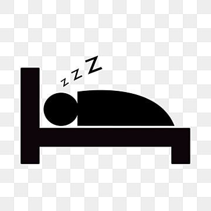
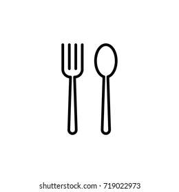
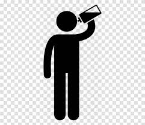
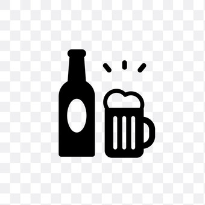
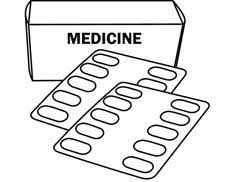

Had minimum of 5 hours sleep.
Had a meal 4 hours before blood donation.
Keep hydrated (Advisable: drink 8 glasses of water.
Not consume alcohol at least 24 hours before blood donation.
Adivisable to not consume medicine (directed to healthcare professional).

Bring along the original document (recommended document: top > down) below for registration and identification purposes:
| Malaysian | Non-Malaysian |
|---|---|
| Identification card (MYKAD)/ARMY/POLICE ID | Passport and stayed in Malaysia for more than 1 year |
| Driving License | Work permit identification with passport number and photo |
| Work permit identification with passport number and photo | Student identification with passport number and photo |
| Student identification with passport number and photo | - |
Any questions can be directed to a healthcare professional during your consultation session before the donation.